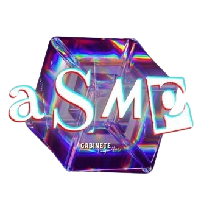
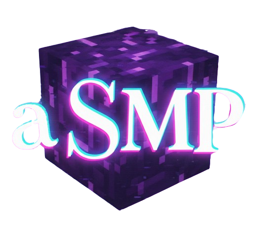
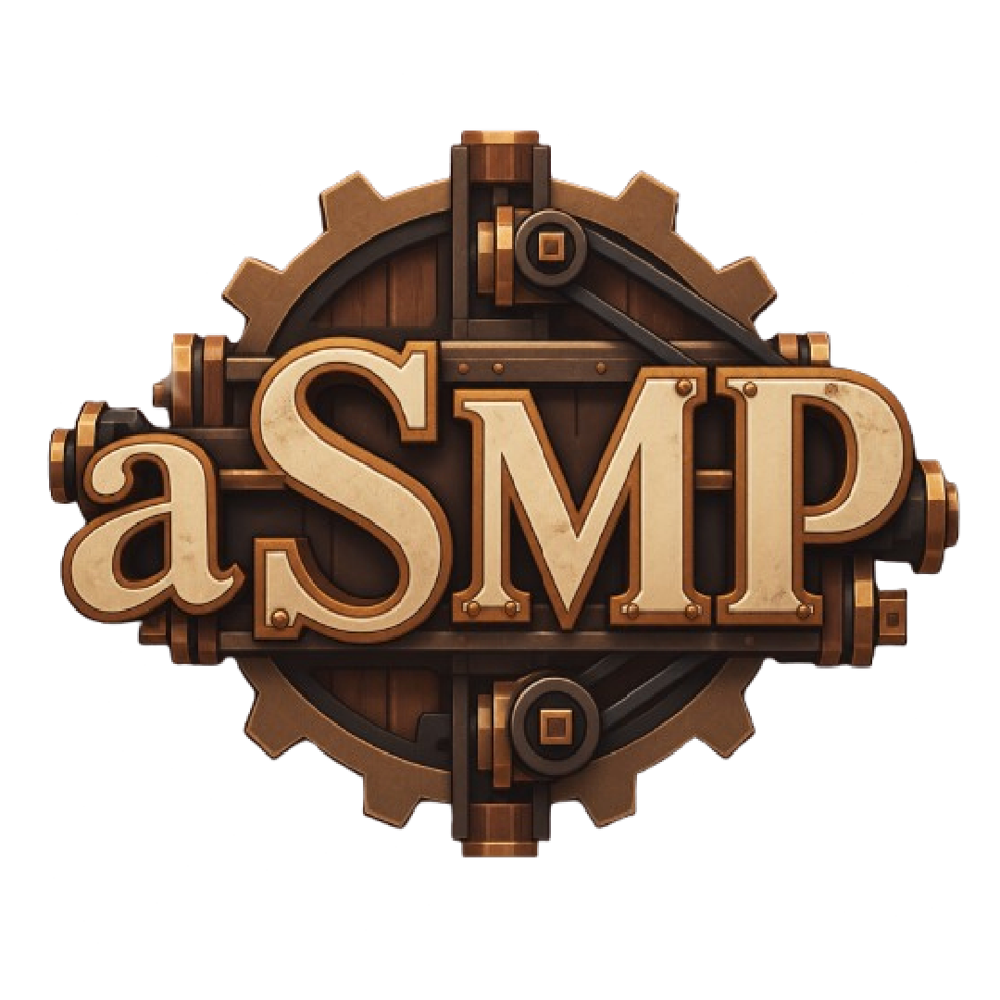
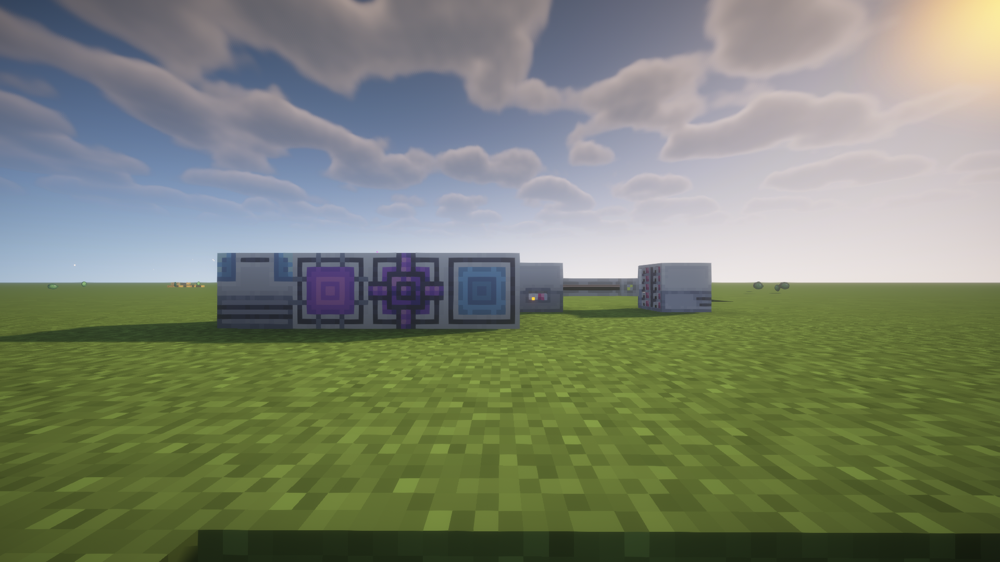
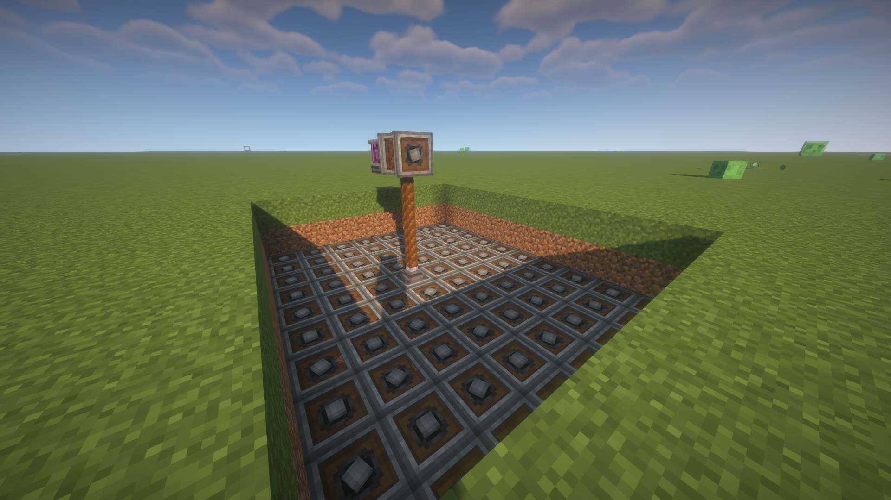
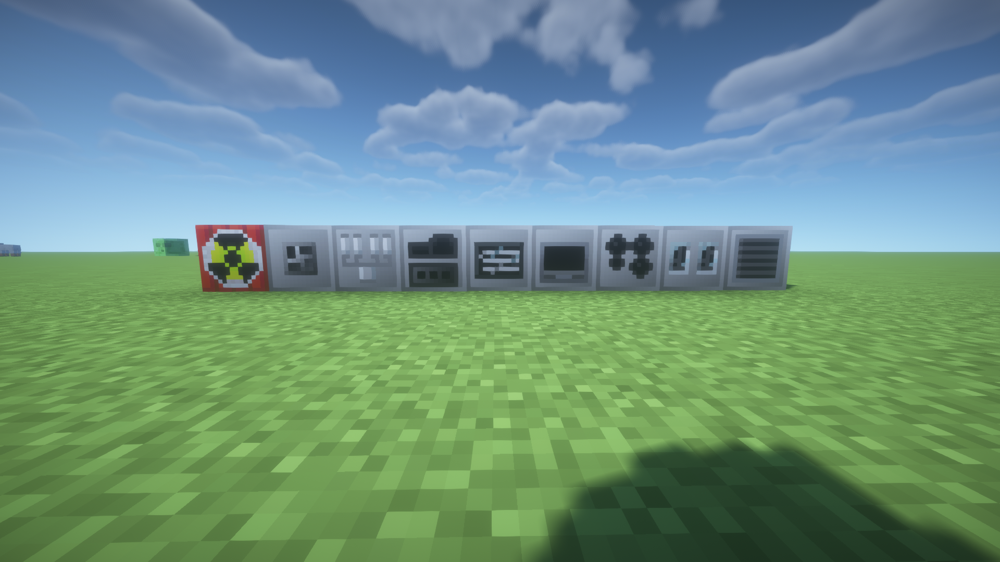

ASMP I
A primeira versão do servidor, foi um servidor fechado, apenas para a turma, era focado em ser vanilla e ter a junção de Bedrock com Java.
- O começo de tudo.
- Integração com Bedrock e Java.
- Deu origem ao ASMP.
ASMP INDUSTRIAL ARCHIVE · DOC. 001
Servidor · Modpack · Arquivo técnico
Um servidor movido pela indústria.
ASMP é um servidor de Minecraft com um modpack próprio. No nosso servidor, o progresso é movido pelas máquinas, vapor, extração e linhas de produção — não por atalhos. Qualquer canto do mundo pode ser um chão de fábrica aberto à exploração, com sistemas que se unem em conjunto a uma comunidade.
TECHNICAL RECORD · SEQ. 003
Linha do tempo das versões registradas do servidor.

A primeira versão do servidor, foi um servidor fechado, apenas para a turma, era focado em ser vanilla e ter a junção de Bedrock com Java.
A segunda versão do servidor, era um pouco mais aberto e também tinha junção de Bedrock com Java.


A atual versão do servidor, apenas em Java, focado em industrialização com um modpack próprio.
PRESS BULLETIN · ED. 014
Uso em prática de máquinas e sistemas do modpack.

ME STORAGE & AUTOMATION
Rede ME para guardar itens em discos, mover carga pelos canais e montar receitas nos terminais. O depósito vira um sistema, não um baú.

MECHANICAL INDUSTRY
Eixos, engrenagens e correias levam rotação pela fábrica. A linha cresce peça a peça até a produção andar sozinha.

INDUSTRIAL PRODUCTION
Máquinas a vapor e elétricas em cadeia: minério entra, peça sai. Tubos e cabos ligam o pátio em escala de fábrica.
TECHNICAL ARCHIVE · DRAWER B
Manual técnico do NeoASMP. A busca filtra as fichas abaixo no próprio navegador.
EQUIPAMENTO
Adiciona espaços extras para equipamentos e acessórios usados por outros sistemas do modpack.
UTILIDADE
Melhora o posicionamento de blocos, deixando a construção mais previsível e precisa.
OTIMIZAÇÃO
Otimiza o processamento de redstone para reduzir o custo de grandes circuitos e máquinas.
PROGRESSÃO
Expande sistemas de encantamento, equipamentos, loot e progressão para o fim de jogo.
COMBATE
Amplia os atributos disponíveis para equipamentos, personagens e sistemas de combate.
PROGRESSÃO
Expande o sistema de encantamentos e oferece novas possibilidades para melhorar equipamentos.
MOBS
Adiciona opções para modificar e controlar spawners de criaturas.
INTERFACE
Mostra informações extras sobre fome e saturação dos alimentos diretamente na interface.
ARMAZENAMENTO
Cria redes de armazenamento, terminais, automação e autocrafting para organizar grandes quantidades de itens.
MUNDO
Expande o End com novos biomas, blocos, estruturas, criaturas e recursos para exploração.
UTILIDADE
Adiciona fornalhas aprimoradas para acelerar e melhorar o processamento de materiais.
MUNDO
Reformula o Nether com novos biomas, recursos, criaturas e locais para explorar.
INTERFACE
Exibe a latência do jogador de forma mais clara durante a partida.
UTILIDADE
Melhora o sistema de captura de tela e facilita o registro de momentos do servidor.
INTERFACE
Melhora a busca por itens e informações dentro das interfaces do jogo.
INTERFACE
Reorganiza a tela F3 para deixar as informações técnicas mais legíveis e organizadas.
MUNDO
Adiciona uma grande variedade de biomas, plantas, blocos e ambientes para explorar.
CONSTRUÇÃO
Adiciona um conjunto extra de blocos para construção e decoração.
CONSTRUÇÃO
Facilita a colocação contínua de blocos durante construções e pontes.
UTILIDADE
Permite carregar determinados blocos e entidades para facilitar transporte e organização.
MULTIPLAYER
Mostra o rosto dos jogadores junto às mensagens do chat.
UTILIDADE
Permite marcar mundos como favoritos e organizar melhor a lista de saves.
SOBREVIVÊNCIA
Adiciona sacos de dormir e redes para descansar sem precisar colocar uma cama permanente.
VISUAL
Adiciona recursos visuais como texturas conectadas para melhorar a aparência dos blocos.
INTERFACE
Melhora a tela de controles e facilita encontrar e organizar atalhos do jogo.
SOBREVIVÊNCIA
Cria um corpo no local da morte para armazenar os itens do jogador até o resgate.
COSMÉTICOS
Adiciona recursos cosméticos para personalizar a aparência do jogador.
MULTIPLAYER
Integra informações da sessão do Minecraft à presença do jogador no Discord.
INDÚSTRIA
Constrói sistemas mecânicos usando engrenagens, eixos, correias, máquinas e linhas de produção.
INDÚSTRIA
Adiciona terminais para interagir de forma mais prática com contraptions e sistemas do Create.
OTIMIZAÇÃO
Otimiza o desempenho de contraptions e sistemas do Create em construções mais pesadas.
CRIATURAS
Adiciona novas criaturas e pequenos animais para deixar o mundo mais vivo.
AGRICULTURA
Adiciona criaturas relacionadas às plantações e amplia a interação com a agricultura.
OTIMIZAÇÃO
Reduz o uso de recursos quando o jogo está em segundo plano ou sem atividade.
UTILIDADE
Facilita a remoção de encantamentos de equipamentos e itens.
CONSTRUÇÃO
Adiciona elevadores simples para movimentação rápida entre diferentes andares.
OTIMIZAÇÃO
Otimiza a renderização de block entities para reduzir o impacto visual no desempenho.
OTIMIZAÇÃO
Evita renderizar entidades que estão escondidas da câmera, ajudando no desempenho.
INDÚSTRIA
Expande a progressão industrial com novas máquinas, processos e etapas de produção.
AGRICULTURA
Expande agricultura e culinária com novos alimentos, ferramentas, ingredientes e formas de preparar comida.
UTILIDADE
Permite derrubar árvores de forma mais rápida ao quebrar a base do tronco.
INTERFACE
Melhora a aparência das notificações e avisos exibidos pelo jogo.
MULTIPLAYER
Agiliza a verificação de servidores e a leitura de informações de conexão.
OTIMIZAÇÃO
Otimiza o processamento do mapa de sombras usado pelo Iris.
OTIMIZAÇÃO
Reduz o uso de memória do Minecraft para deixar o modpack mais leve.
EXPLORAÇÃO
Adiciona planadores para atravessar grandes distâncias pelo mundo.
VISUAL
Melhora a visibilidade em áreas escuras sem depender de tochas para enxergar.
INTERFACE
Destaca itens e informações relevantes durante pesquisas e interações com interfaces.
OTIMIZAÇÃO
Otimiza partes da renderização do Minecraft para melhorar o desempenho gráfico.
VILAREJOS
Permite realizar trocas com aldeões sem esgotar suas ofertas normalmente.
INTERFACE
Permite continuar movimentando o personagem enquanto determinadas interfaces estão abertas.
INTERFACE
Mostra informações do inventário e equipamentos diretamente sobre a tela de jogo.
INTERFACE
Adiciona atalhos e interações rápidas para organizar e manipular itens.
VISUAL
Adiciona pequenos efeitos visuais às interações com o inventário.
INTERFACE
Facilita a navegação entre diferentes inventários usando abas.
VISUAL
Adiciona suporte a shaders para alterar iluminação, sombras e aparência do mundo.
ARMAZENAMENTO
Adiciona baús maiores para aumentar a capacidade de armazenamento.
INTERFACE
Mostra informações sobre blocos e entidades quando o jogador aponta para eles.
INTERFACE
Permite consultar itens, receitas e usos diretamente dentro do jogo.
OTIMIZAÇÃO
Otimiza partes da comunicação de rede para reduzir custos de processamento.
VISUAL
Faz fontes de luz carregadas pelo jogador iluminarem o ambiente dinamicamente.
MUNDO
Remove folhas deixadas para trás por árvores derrubadas, mantendo o ambiente mais limpo.
OTIMIZAÇÃO
Otimiza diversos sistemas internos do Minecraft para melhorar desempenho sem alterar a jogabilidade.
EXPLORAÇÃO
Faz com que determinados baús de estruturas tenham loot individual para cada jogador.
OTIMIZAÇÃO
Ferramenta voltada à geração e estabilidade de frames para melhorar a fluidez do jogo.
INDÚSTRIA
Adiciona uma cadeia industrial completa com máquinas, energia, processamento e automação em escala.
OTIMIZAÇÃO
Corrige problemas e otimiza carregamento, memória e desempenho de modpacks grandes.
OTIMIZAÇÃO
Evita renderizações desnecessárias para reduzir o trabalho da GPU.
INTERFACE
Adiciona atalhos e melhorias para movimentar itens dentro dos inventários.
INTERFACE
Exibe barras de vida e informações básicas sobre criaturas acima delas.
INTERFACE
Adiciona ferramentas rápidas para organizar e ordenar inventários.
UTILIDADE
Melhora a tela exibida quando o jogo encontra um erro, facilitando a identificação do problema.
INTERFACE
Adiciona melhorias e informações extras aos tooltips de itens.
MINERAÇÃO
Facilita a coleta de veios de minério ao quebrar uma parte da formação.
MULTIPLAYER
Melhora a exibição dos nomes dos jogadores de acordo com a perspectiva da câmera.
RECURSOS
Adiciona o sistema EMC para converter itens e recursos dentro de uma progressão própria.
MULTIPLAYER
Altera a apresentação dos nomes dos jogadores para uma identificação mais natural no mundo.
INTERFACE
Melhora a organização e a navegação das configurações gráficas do Sodium.
CRIATURAS
Adiciona novos sapos e elementos relacionados para enriquecer o ambiente.
OTIMIZAÇÃO
Otimiza o sistema de iluminação para reduzir o custo de processamento em mundos grandes.
MULTIPLAYER
Permite criar equipes de jogadores e organizar grupos dentro do servidor.
MULTIPLAYER
Adiciona comunicação por voz entre os jogadores diretamente dentro do Minecraft.
OTIMIZAÇÃO
Reescreve partes importantes da renderização para aumentar o desempenho gráfico.
OTIMIZAÇÃO
Adiciona mais opções de configuração e controle ao sistema gráfico do Sodium.
INDÚSTRIA
Adiciona geração de energia solar para complementar as cadeias industriais do modpack.
ARMAZENAMENTO
Adiciona mochilas expansíveis com melhorias para armazenamento, organização e transporte.
ÁUDIO
Adiciona efeitos de acústica e reverberação para tornar os sons do mundo mais naturais.
ÁUDIO
Amplia a experiência sonora do jogo com novos sons e elementos de ambientação.
OTIMIZAÇÃO
Busca melhorar a estabilidade da taxa de quadros e reduzir oscilações de desempenho.
MULTIPLAYER
Exibe as mensagens do chat próximas aos jogadores que estão falando.
DIMENSÃO
Adiciona uma dimensão própria com biomas, estruturas, criaturas e desafios para explorar.
ARMAZENAMENTO
Cria uma rede simples para acessar e organizar itens de vários inventários em um único sistema.
VILAREJOS
Facilita a troca de profissões dos aldeões para encontrar ofertas diferentes.
EXPLORAÇÃO
Exibe títulos quando o jogador entra em diferentes biomas e regiões do mundo.
VILAREJOS
Permite visualizar informações internas dos inventários e profissões dos aldeões.
EXPLORAÇÃO
Adiciona pontos de teleporte para facilitar viagens entre bases e locais importantes.
EXPLORAÇÃO
Permite transportar animais junto com o jogador ao utilizar sistemas de teleporte.
EXPLORAÇÃO
Integra pontos de Waystones com sistemas de waypoints para facilitar a navegação.
MAPA
Adiciona um minimapa com informações do terreno, entidades e pontos marcados.
MAPA
Adiciona um mapa completo do mundo para navegação e marcação de locais importantes.
MULTIPLAYER
Mostra quando outro jogador está digitando uma mensagem no chat.
Nenhuma ficha encontrada neste gaveteiro.
SERVER REGISTRY · BOOK 02
Registro da whitelist do Servidor — Lista com todos os jogadores.
DISTRIBUTION TERMINAL · BAY 01
Terminal de entrega do modpack.
PACOTE